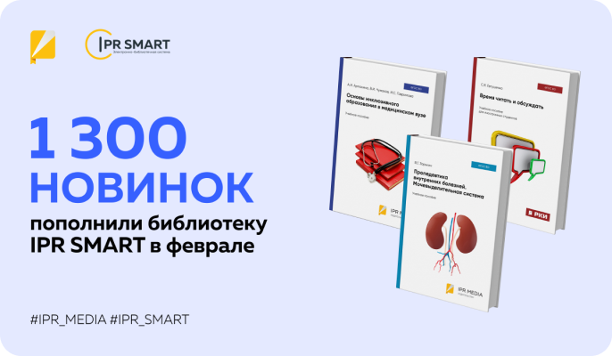

21.03.2024
В феврале на платформу IPR SMART добавлено более 1,3 тыс. учебных изданий
Более 1 300 новинок учебной литературы для высшего и среднего профессионального образования добавлено в каталог цифровой библиотеки IPR SMART в феврале 2024 года.
Наиболее заметно пополнились разделы технических и инженерных наук, где количество изданий превысило 420 изданий, наук об обществе (свыше 320 изданий), математических и естественных наук (свыше 190 изданий). Обновлены подборки по гуманитарным, медицинским, педагогическим наукам, информационной безопасности, сельскому хозяйству, искусству и культуре, военному делу.
Среди обновлений — эксклюзивные книги от издательств «Ай Пи Ар Медиа» и «Профобразование». Это более 60 наименований учебной литературы по экономике, социологии и психологии, языкознанию, истории, медицине, ветеринарии, сельскому хозяйству, физике, химии, промышленности, информационным наукам и т.д.
Данные издания теперь доступны пользователям в электронном виде, а многие из них можно приобрести в печатном варианте в качественном полиграфическом исполнении. Подробный перечень и стоимость печатных изданий можно посмотреть в прайсе. Заявку на приобретение тиража книг можно направить на почту izdat@iprmedia.ru с указанием контактного телефона, e-mail и количества экземпляров.
Также для заказа печатных книг можно использовать форму заявки в ЭБС IPR SMART или приобрести на маркетплейсах, таких как OZON, Wildberries, Яндекс.Маркет и в интернет-магазине “Читай-город”
В феврале в электронной библиотеке широко представлены книги от крупных российских и международных издательств:
- «Дашков и К» — более 130 наименований;
- «Юриспруденция» — более 20 наименований;
- «Троицкий мост» — более 20 наименований;
- «KNRTU Press», «Русский язык. Курсы», «Сибирская благозвонница» и др.
В феврале в электронной библиотеке широко представлены книги от крупных российских и международных издательств:
- Московский государственный технический университет имени Н.Э. Баумана;
- Казанский национальный исследовательский технологический университет;
- Государственный аграрный университет Северного Зауралья;
- Новосибирский государственный архитектурно-строительный университет (Сибстрин);
- Астраханский государственный архитектурно-строительный университет;
- Саратовский государственный университет;
- Санкт-Петербургский государственный архитектурно-строительный университет;
- Тверской государственный университет, Университет экономики и управления;
- Сибирский государственный университет физической культуры и спорта;
- Южно-Уральский технологический университет и др.
Новые учебники, пособия, практикумы, монографии цифровой библиотеки IPR SMART уже доступны на платформе. Для тех, кто ещё не является пользователем ресурса, есть возможность ознакомиться с богатой коллекцией учебного контента и всеми полезными инструментами с помощью тестового доступа. Для его открытия достаточно отправить запрос на почту marketing@iprmedia.ru.
Напоминаем, что ЭБС IPR SMART доступна как на компьютере, так и на смартфонах через мобильное приложение IPR BOOKS Mobile Reader.
Пользуйтесь сами и рекомендуйте коллегами и студентам!